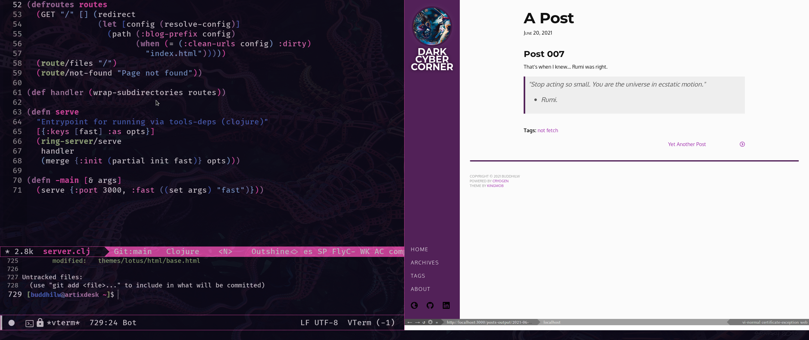

Functional Web Projects
My first impressions of Cryogen and Nyxt (Clojure/Common Lisp)
--- English verion ---
In this fortnight, I worked on two side #projects.
I learned about Nyxt, a extremely extensible browser, written in pure Common Lisp. Blazely fast! I could compose him with Emacs functions easily.
At last, I develop my static website generator, based on Cryogen, a #clojure template. It's written in 70 lines of code. Pretty astonishing. The library itself has less than 400 lines of code.
Github page: https://github.com/BuddhiLW/Blobing
"Stop acting so small. You are the universe in ecstatic motion."
- Rumi.
--- Portuguese version ---
Essa quinzena, tive o prazer de aprender com, e estender, dois diferentes projetos secundários.
Utilizei a biblioteca Cryogen. Foi possível escrever um gerador de sites estáticos em 70 linhas de Clojure(Script).
Comei a utilizar o Nyxt, um browser escrito em Common Lisp. Assustadoramente rápido. E, o mais importante, muito fácil de aprimorar seu comportamento. É possível utilizar as funções do meu editor de texto, nele, diretamente.
"Pare de ajir pequeninamente. Você é o universo em movimento exstático."
- Rumi.